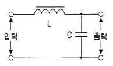
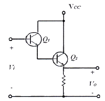
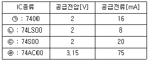
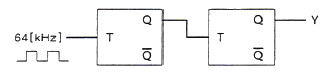
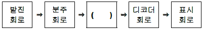
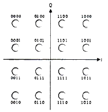
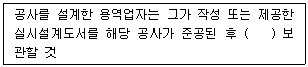
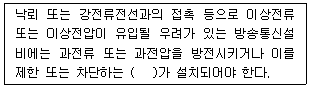

정보통신산업기사 (2013-10-12 기출문제)
1과목: 디지털전자회로
1. 제너다이오드에서 제너전압이 10[V], 전력이 5[W]인 경우 최대전류의 크기는?
- 0.⑤[A]
- 0.5[A]
- 0.⑤[mA]
- 0.5[mA]
(정답률: 74%)

2. 다음 중 3상 반파 정류회로의 설명으로 알맞지 않은 것은?
- 변압기의 이용률이 좋다.
- 출력 전압의 맥동 주파수는 전원 주파수의 3배이다.
- 부하 정류 전류는 다이오드 1개에 3배의 전류가 흐른다.
- 직류분에 대한 맥동률은 작으나 전압 변동률은 단상보다 크다.
(정답률: 49%)
3. 다음 그림과 같은 초크 입력형 평활회로에서 출력측의 맥동 함유율을 작게 하려고 할 때 적합한 방법은?

- L과 C를 모두 크게 한다.
- L과 C를 모두 적게 한다.
- L을 크게 C를 작게 한다.
- C을 크게 L을 작게 한다.
(정답률: 82%)
4. 다음 중 트랜지스터 증폭회로에서 부궤환을 걸었을 때 일어나는 현상이 아닌 것은?
- 안정도가 좋아진다.
- 비직선 일그러짐이 적어진다.
- 주파수 특성이 개선된다.
- 대역폭이 감소한다.
(정답률: 72%)
5. 다음 회로의 설명으로 틀린 것은? (단, hfe1=Q1의 순방향 전압 증폭률, hfe2=Q2의 순방향 전압 증폭률)

- 트랜지스터 Q1과 Q2는 Darlington 접속이다.
- 전류증폭률은 (1+hfe1)(1+hfe2)이다.
- 입력저항이 대단히 높고 출력저항은 낮다.
- 전압이득이 1보다 크다.
(정답률: 75%)
6. 다음 중 그 값이 작을수록 좋은 것은?
- 증폭기 바이어스 회로의 안정계수
- 차동증폭기의 동상신호 제거비(CMRR)
- 증폭기의 신호대 잡음비
- 정류기의 정류효율
(정답률: 67%)
7. 다음 중 가장 효율이 좋은 증폭방식은?
- A급
- B급
- C급
- AB급
(정답률: 83%)
8. 다음 중 수정발진기에서 주파수 변동이 일어나는 주 원인이 아닌 것은?
- 주위 온도의 변화
- 부하의 변동
- 전원전압의 변동
- 동조점의 안정
(정답률: 66%)
9. 다음 중 무선송신기의 발진기 조건으로 잘못된 것은?
- 주파수 안정도가 높을 것
- 고조파 발생이 적을 것
- 부하의 변동에 영향이 클 것
- 주파수의 미세조정이 용이할 것
(정답률: 74%)
10. 진폭변조에서 반송파 전압이 5[V], 신호파 전압이 2[V]인 경우 변조도(m)는?
- 10[%]
- 20[%]
- 40[%]
- 60[%]
(정답률: 66%)
11. 다음 중 디지털 변복조 방식에 해당하지 않는 것은?
- ASK
- FSK
- SSB
- QAM
(정답률: 72%)
12. 다음 중 멀티바이브레이터에 대한 설명으로 틀린 것은?
- 부궤환으로 동작한다.
- 회로의 시정수가 주기로 결정된다.
- 출력에 고차의 고조파를 포함하고 있다.
- 전원전압이 변동해도 발진 주파수에는 큰 변화가 없다.
(정답률: 62%)
13. 50[Hz]의 주파수를 갖는 펄스열의 듀티 사이클(Duty Cycle)이 25[%]라면 펄스의 폭은 얼마인가?
- 50[ms]
- 20[ms]
- 5[ms]
- 1[ms]
(정답률: 56%)
14. 디지털 IC계열의 종류별 공급전압, 공급전류 특성이 다음 표와 같을 경우 논리장치인 CHIP의 전력소모가 가장 낮은 것은 어느 것인가?

- ㉠
- ㉡
- ㉢
- ㉣
(정답률: 76%)
15. 8진수 67을 16진수로 바르게 변환한 것은?
- 43
- 37
- 55
- 34
(정답률: 71%)
16. 다음 회로에서 Y는 어떤 파형이 출력되는가? (단, 입력은 64[kHz] 구형파이다.)

- 32[kHz] 구형파
- 24[kHz] 구형파
- 16[kHz] 구형파
- 8[kHz] 구형파
(정답률: 76%)
17. 다음은 디지털 시계의 블록 다이어그램이다. 괄호 안에 들어갈 알맞은 항목은 무엇인가?

- 플립플롭 회로
- 카운터 회로
- 증폭 회로
- 드라이브 회로
(정답률: 80%)
18. 다음 중 멀티플렉서에 대한 설명으로 틀린 것은?
- 여러 개의 데이터 입력을 적은 수의 채널로 전송한다.
- n개의 입력선과 2n개의 선택선으로 구성한다.
- 선택선은 비트조합에 의해 입력 중 하나가 선택된다.
- Data Selector라고도 할 수 있다.
(정답률: 75%)
19. 다음 중 연산증폭기의 응용 회로가 아닌 것은?
- 영전위 검출기
- FIR필터
- 비교기
- 피크 검출기
(정답률: 60%)
20. 전원이 차단되었을 때 데이터가 지워지는 소자는?
- EPROM
- EEPROM
- NVRAM
- SDRAM
(정답률: 69%)
2과목: 정보통신기기
21. 컴퓨터 시스템의 처리결과를 데이터 또는 문자로 바꿔주는 장치는?
- 플로터
- OMR
- OCR
- 카드 리더
(정답률: 73%)
22. 정보 단말기의 전송 제어 기능 중 입력되는 신호를 검출하여 데이터를 입력하거나 출력하는 기능은?
- 입·출력 기능
- 에러 제어 기능
- 입·출력 제어 기능
- 송·수신 제어 기능
(정답률: 55%)
23. 데이터 처리방식에 따른 통신제어장치(CCU) 분류 중 대규모 데이터 통신시스템에 많이 사용되는 것으로 컴퓨터에 걸리는 부하가 가장 적은 방식은?
- 비트 버퍼 방식
- 메시지 버퍼 방식
- 문자 버퍼 방식
- 블록 버퍼 방식
(정답률: 74%)
24. 다음 중 회선교환방식에 대한 설명으로 가장 적합한 것은?
- 통신정보를 패킷 단위로 교환한다.
- 속도와 코드 변환이 있다.
- 가상회선방식이 존재한다.
- 회선을 점유하고 통신한다.
(정답률: 78%)
25. 동일 및 이기종 LAN 간을 연결하는데 사용되며 데이터 링크 계층까지의 기능을 수행하는 네트워크 장비는?
- 리피터(Repeater)
- 브리지(Bridge)
- 라우터(Router)
- 게이트웨이(Gateway)
(정답률: 67%)
26. 디지털 데이터를 아날로그 전송 회선에 적합하도록 데이터를 변형하여 먼 거리에 존재하는 컴퓨터나 단말 장치에 전송하기 위해서 필요한 장비는?
- MODEM
- DSU
- CODEC
- CSU
(정답률: 82%)
27. N 위상 변조에서 동기식 모뎀의 신호 속도가 M[baud/sec]인 경우 비트 속도를 구하는 식은?
- M log2 N
- N log2 M
- M log10 N
- N log10 M
(정답률: 84%)
28. 고속의 데이터 전송기술인 xDSL에서 사용되는 변조방식이 아닌 것은?
- QAM
- DMT
- CAP
- PCM
(정답률: 58%)
29. 다음 중 네트워크 장비인 L4 스위치에 대한 설명으로 옳지 않은 것은?
- OSI 계층의 세션 계층에서 동작한다.
- 패킷을 분류하고 경로를 제어한다.
- 포트 번호로 세션을 관리한다.
- 로드 밸런싱 기능을 담당한다.
(정답률: 73%)
30. 다음 중 화상통신에서의 전송 순서로 올바른 것은?
- 송신화상 → 광전변환 → 전송로 → 전광변환 → 수신화상
- 송신화상 → 변조 → 전광변환 → 광전변환 → 복조 → 수신화상
- 송신화상 → 전광변환 → 변조 → 복조 → 광전변환 → 수신화상
- 송신화상 → 광전변환 →전광변환 → 변조 → 복조 → 수신화상
(정답률: 66%)
31. 통신망 신호방식 중 다이얼 방식에서 메이크 시간=2, 단속 시간=4일 때, 단속비는 얼마인가?
- 0.5
- 1
- 2
- 3
(정답률: 81%)
32. 데이터 통신망과 전화회선을 이용하여 정보검색, 예약업무, 홈쇼핑, 홈뱅킹 등의 다양한 서비스를 제공하는 양방향 화상 정보 시스템은?
- 팩시밀리
- 텔렉스
- 비디오텍스
- 텔레텍스
(정답률: 82%)
33. 특수한 목적으로 간단한 카메라와 모니터링 화면 및 이를 총괄하여 처리하는 컴퓨터 시스템으로 구성된 통신기기는?
- CATV
- CCTV
- FAX
- HDTV
(정답률: 90%)
34. 이동통신시스템에서 다중경로 페이딩에 의한 지연 왜곡을 극복하기 위하여 수신단에서 여러 경로로 적당한 시간만큼 지연시켜 각 경로에서 복조된 신호들을 결합하는 것은?
- 헤테로다인 수신기
- 등화기술
- 레이크 수신기
- 인터리빙기술
(정답률: 69%)
35. 변조방식에 있어서 신호의 크기에 따라 반송파의 주파수가 변화하는 방식을 무엇이라 하는가?
- 주파수변조(FM)
- 위상변조(PM)
- 진폭변조(AM)
- 델타변조(DM)
(정답률: 88%)
36. 다음 중 수신기의 전기적 성능이 아닌 것은?
- 감도
- 선택도
- 변조도
- 충실도
(정답률: 65%)
37. 다음 중 정지 및 이동 중 언제 어디서나 고속 무선 인터넷 서비스 이용이 가능한 단말기는?
- FAX 단말기
- PSTN 단말기
- 와이브로 단말기
- ISDN 단말기
(정답률: 88%)
38. 샤논의 통신용량 공식에서 통신용량은 대역폭의 몇 배 비례하는가?
- 1배
- 1.5배
- 2배
- 3배
(정답률: 84%)
39. 다음 중 멀티미디어 기기의 기능으로 맞지 않는 것은?
- 고사양 CPU
- 저해상도 디스플레이
- 고속지원
- 다양한 서비스 형태 이용
(정답률: 92%)
40. 아주 작은 네온전구의 집합과 같은 기능을 하는 평면형 표시 장치로 2매의 얇은 유리 기판 사이의 좁은 틈에 네온 등의 가스를 봉입하고 유리의 내면에 수평 방향과 수직 방향으로 배열된 투명전극으로 구성되어 있는 것은?
- OLED
- PDP
- LCD
- CRT
(정답률: 79%)
3과목: 정보전송개론
41. PCM 방식에서 입력신호의 최대신호가 2[kHz]인 경우 표본화 주파수(fs)와 표본화 주기(Ts)의 계산값은?
- fs = 2[kHz], Ts = 500[μs]
- fs = 4[kHz], Ts = 250[μs]
- fs = 6[kHz], Ts = 167[μs]
- fs = 8[kHz], Ts = 125[μs]
(정답률: 84%)
42. 다음의 그림과 같이 신호공간 다이어그램으로 표현되는 변조 방식은?

- 8진 DFSK
- 16진 PSK
- 16진 QAM
- 8진 QAM
(정답률: 85%)
43. 8진 PSK(Phase Shift Keying)에서 반송파 간의 위상차는?
- 25도
- 45도
- 90도
- 125도
(정답률: 85%)
44. 다음 중 이동통신에서 사용되는 다원접속방식이 아닌 것은?
- SDMA
- FDMA
- TDMA
- CDMA
(정답률: 66%)
45. 전송매체의 전송 주파수가 높을수록 전류가 도체면을 따라 흐르는 현상을 무엇이라 하는가?
- 누화효과
- 유도효과
- 표피효과
- 절연효과
(정답률: 70%)
46. 일반적인 전송선로에서 저항을 R, 인덕턴스를 L, 정전용량을 C, 컨덕턴스를 G라 할 때, 무왜곡 전송조건은?
- RL = GC/2
- RC = LG
- RG = LC
- T+L = C+G
(정답률: 84%)
47. 무선랜 주파수로 사용되고 있는 5[GHz] 주파수의 파장은? (단, 전파속도 : 3×108[m/s])
- 16.6[m]
- 16.7[m]
- 0.⑤[m]
- 0.06[m]
(정답률: 76%)
48. 다음 UTP 케이블 중 높은 주파수에서도 가장 적은 유전체 손실과 양호한 절연 특성을 가지는 케이블 등급은?
- Category 1
- Category 3
- Category 4
- Category 5
(정답률: 85%)
49. 다음 중 통화로 신호방식(Channel Associated Signaling)에서 사용하지 않는 방식은?
- 직류방식
- In-band 방식
- Out-of-band 방식
- 교류방식
(정답률: 65%)
50. 다음 중 비동기식 전송 방식의 특징으로 옳은 것은?
- 송신측과 수신측이 항상 동기를 유지한다.
- 문자나 비트를 Start-Stop 비트 없이 전송한다.
- 정보 전송형태는 블록 단위로 이루어진다.
- 전송되는 각 문자 사이에 휴지기간(Idle Time)이 있다.
(정답률: 69%)
51. 문자 동기 방식에서 문자동기를 유지시키거나 어떤 데이터 또는 제어 문자가 없을 때 채우기 위해서 사용하는 문자 기호는?
- STX
- ETX
- SYN
- SOH
(정답률: 80%)
52. 16진 QAM의 대역폭 효율은 얼마인가?
- 2[bps/Hz]
- 4[bps/Hz]
- 6[bps/Hz]
- 16[bps/Hz]
(정답률: 84%)
53. 감시형식 프레임(S frame)에서 제어부의 8개의 비트 b1~b8 중 b1~b4가 1010으로 구성되어 있다면 이는 어떤 기능을 의미하는가?
- RR(Receive Ready)
- RNR(Receive Not Ready)
- REJ(Reject)
- SREJ(Selective Reject)
(정답률: 77%)
54. 다음 중 프로토콜의 기능이 아닌 것은?
- 흐름제어(Flow Control)
- 세분화(Fragmentation)
- 정보보안(Information Security)
- 캡슐화(Encapsulation)
(정답률: 73%)
55. 다음 중 OSI 참조모델에 대한 설명으로 맞지 않는 것은?
- 개방형 시스템의 상호 통신을 위한 참조 모델이다.
- ISO에서 동일 기종 간의 컴퓨터 통신을 위한 구조 개발에 의해 만들어진 규정이다.
- 통신 기능을 7계층으로 나누어 각 계층의 기능을 정의하였다.
- 서로 다른 컴퓨터나 정보통신시스템 간의 연결과 원활한 정보 교환을 위한 표준화된 절차이다.
(정답률: 79%)
56. 거리 벡터 라우팅을 이용하는 네트워크 간 연결에서 5개의 라우터와 6개의 네트워크가 있다면 몇 개의 라우팅 표가 있어야 하는가?
- 1
- 5
- 6
- 11
(정답률: 70%)
57. 동적 라우팅 프로토콜(Dynamic Routing Protocol)에서 사용하는 알고리즘이 아닌 것은?
- 거리 벡터 알고리즘(Distance Vector Algorithm)
- 링크 상태 알고리즘(Link State Algorithm)
- 패스 벡터 알고리즘(Path Vector Algorithm)
- 디폴트 상태 알고리즘(Default State Algorithm)
(정답률: 79%)
58. C class의 네트워크 200.13.95.0의 서브넷 마스트가 255.255.255.224일 경우 사용 가능한 최대 호스트 수는 몇 개인가?
- 6
- 14
- 30
- 62
(정답률: 76%)
59. 다음 중 병렬 전송 방식에 대한 특징을 가장 잘 나타낸 것은?
- 전송속도가 느리다.
- 전송로 비용이 상승한다.
- 주로 원거리 전송에 사용한다.
- 직병렬 변환회로가 필요하다.
(정답률: 75%)
60. 데이터 통신에서 전송제어 절차를 바르게 나타낸 것은?
- 회선연결 → 전송 → 링크설정 → 링크절단
- 링크설정 → 회선연결 → 전송 → 회선절단 → 링크절단
- 회선연결 → 링크설정 → 전송 → 링크절단 → 회선절단
- 링크설정 → 데이터전송 → 회선설정 → 링크절단
(정답률: 77%)
4과목: 전자계산기일반 및 정보설비기준
61. 다음 중 CPU에 인터럽트가 발생할 때의 OS 동작 설명으로 틀린 것은?
- 수행 중인 프로세스나 스레드의 상태를 저장한다.
- 인터럽트 종류를 식별한다.
- 인터럽트 서비스 루틴을 호출한다.
- 인터럽트 처리 결과를 텍스트 형식의 파일로 저장한다.
(정답률: 70%)
62. 다음 중 SRAM에 대한 설명으로 틀린 것은?
- 플립플롭회로를 사용하여 만들어졌다.
- 모든 메모리 유형 중에서 가장 빠르다.
- 일반적으로 CPU의 레지스터나 캐시 메모리에만 사용된다.
- 저장된 데이터를 유지하기 위해 계속적으로 데이터를 새롭게 하는 것이 필요하다.
(정답률: 79%)
63. 2진수 1001에 대한 1의 보수와 2의 보수의 표현으로 옳은 것은?
- 1101, 0110
- 0110, 0111
- 0111, 1110
- 0101, 0111
(정답률: 87%)
64. 다음 보기 중에서 설명이 틀린 것은?
- 어셈블러는 어셈블리어를 기계어로 번역시키는 것을 의미한다.
- 컴파일러는 고급언어를 기계어로 번역시키는 것을 의미한다.
- 인터프리터는 소스프로그램을 중간 단계 프로그램으로 변환하여 그 내용을 해석하고 해석한 대로 실행하여 결과를 출력하는 프로그램이다.
- 프리프로세서는 고급언어를 저급언어로 번역하는 것을 의미한다.
(정답률: 70%)
65. 다음 응용 소프트웨어 중 성격이 다른 소프트웨어는?
- WINZIP
- WINARJ
- ALZIP
- WF_FTP
(정답률: 75%)
66. 입출력 포트의 종류 중 병렬 포트(Parallel Port)가 아닌 것은?
- USB
- FDD
- HDD
- CD-ROM
(정답률: 80%)
67. 다음 중 2진수 1011을 0100으로 각 비트의 값을 반전시키거나 보수를 구할 때 사용하는 연산은?
- AND 연산
- OR 연산
- NOT 연산
- XOR 연산
(정답률: 70%)
68. 다음 중 운영체제가 아닌 것은?
- 윈도우즈 XP
- 아파치 웹서버
- 리눅스
- 애플의 iOS
(정답률: 86%)
69. 운영체제 기능 중 파일관리에 대한 설명으로 틀린 것은?
- 디렉토리 계층구초(Hierarchical Directory Structure)의 개념으로 사용한다.
- 지정된 파일에 대해 우연히 또는 고의로 적절치 못한 접근이 있을 경우 이를 금지하는 개념으로 사용한다.
- 파일 시스템 구조는 논리적 구조와 물리적 구조로 구분된다.
- 주 기억 장치상의 파일 편성, 등록, 공유나 파일로의 액세스 등을 부분적으로 다룬다.
(정답률: 49%)
70. 다음 중 마이크로프로세서를 구성하는데 꼭 필요한 것이 아닌 것은?
- Adder
- Register
- Control Unit
- Audio Codec
(정답률: 83%)
71. 다음 중 정보통신공사의 총 공사금액에 해당하는 감리원 배치가 잘못된 것은?
- 80억 : 특급감리원
- 35억 : 고급감리원
- 7억 : 초급감리원
- 3억 : 초급감리원
(정답률: 82%)
72. 기간통신사업자가 전기통신업무에 제공되는 선로 등을 설치하기 위하여 타인의 토지 또는 이에 정착된 건물·공작물을 사용하는 경우 취하여야 할 조치로 옳은 것은?
- 선로설비 등을 설치한 후 토지의 소유자 또는 점유자와 협상한다.
- 토지의 소유자 또는 점유자와 사전에 협의를 하여야 한다.
- 미리 토지의 소유자 또는 점유자에게 공시가로 보상을 하여야 한다.
- 선로설비 등을 설치한 후 토지의 소유자 또는 점유작에게 통지한다.
(정답률: 82%)
73. 사업자가 정보통신설비와 이에 연결되는 다른 정보통신설비 또는 이용자설비와의 사이에 정보의 상호전달을 위하여 인터넷이나 언론매체 등에 공개하여야 하는 것은 무엇인가?
- 이용약관
- 기술기준
- 유의사항
- 통신규약
(정답률: 61%)
74. 통신·방송·인터넷이 융합된 멀티미디어 서비스를 언제 어디서나 고속·대용량으로 이용할 수 있는 정보통신망을 무엇이라 하는가?
- 초고속 정보통신망
- 초고속 국가정보망
- 광대역 국가정보망
- 광대역통합정보통신망
(정답률: 87%)
75. 다음은 설계도서의 보관의무에 관한 사항이다. 괄호 안에 들어갈 내용으로 알맞으 것은?

- 3년간
- 5년간
- 7년간
- 하자담보책임기간까지
(정답률: 70%)
76. 다음 문장의 괄호 안에 들어갈 알맞은 것은?

- 보호기
- 증폭기
- 변조기
- 유도기
(정답률: 92%)
77. 선로설비의 회선 상호 간, 회선과 대지 간 및 회선의 심선 상호 간의 절연저항은 직류 500볼트 절연저항계로 측정하여 얼마 이상이어야 하는가?
- 5[MΩ]
- 10[MΩ]
- 20[MΩ]
- 50[MΩ]
(정답률: 79%)
78. 다음 중 정보통신공사업법에서 정의하는 용어에 관한 설명으로 잘못된 것은?
- 용역업 : 정보통신공사에 관한 용역을 영업으로 하는 것
- 수급인 : 발주자로부터 공사를 도급 받은 공사업자
- 감리원 : 공사의 감리에 관한 기술 또는 기능을 가진 사람
- 발주자 : 도급 받은 공사 또는 용역을 하도급하는 사람
(정답률: 68%)
79. 평형회선은 회선 상호 간 방송통신콘텐츠의 내용이 혼입되지 않도록 두 회선 사이의 근단누화 또는 원단누화의 감쇠량을 얼마 이상으로 유지하여야 하는가?
- 68[dB]
- 70[dB]
- 72[dB]
- 74[dB]
(정답률: 86%)
80. 전기통신역무와 이를 이용하여 정보를 제공하거나 정보의 제공을 매개하는 것을 무엇이라 하는가?
- 정보보호산업
- 정보통신서비스
- 통시과금서비스
- 정보통신망 운용서비스
(정답률: 80%)